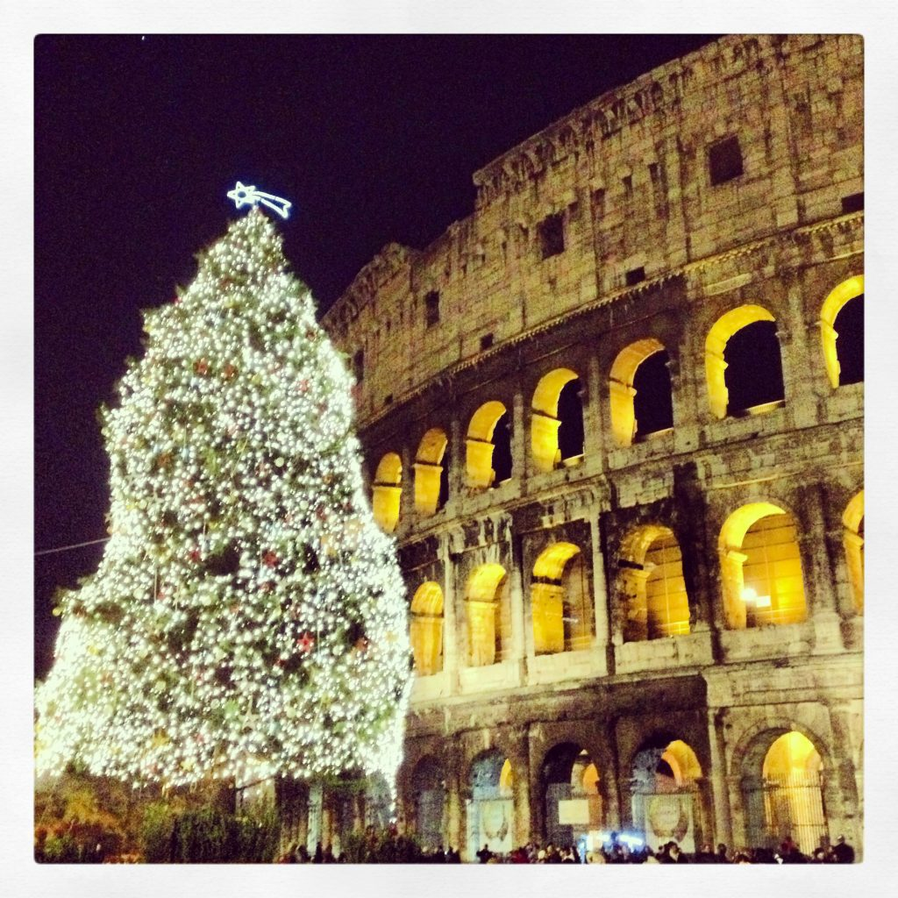

Photo by Francesca Tosolini
Probably many of you know that the most common way to say Merry Christmas in Italian is Buon Natale, however, how many of you know what Natale means? The word comes from Latin natus which means "to be born", plus the suffix -alem which indicates belonging, therefore Natale means "the day belonging to the birth (of Jesus)".